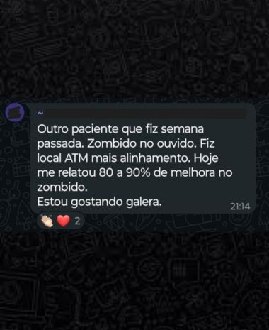

Para profissionais que já aplicam Terapia Neural e querem ir mais fundo.
O NeuroMaster PRO mapeia o corpo inteiro: 100 pontos de aplicação em 10 módulos.
A camada seguinte da Terapia Neural — para quem já faz e quer chegar mais longe.
Garantir minha vaga na pré-vendaOlha só. Você já aplica Terapia Neural, sabe o que é procaína, conhece os pontos, entende o raciocínio sistêmico. E ainda assim tem um tipo de paciente que tira o seu sono: o que sai melhor da sessão e, algumas semanas depois, está de volta do mesmo jeito.
Não é erro de técnica. Não é paciente "difícil". Muitas vezes é simples: o problema está em uma estrutura que o seu mapa atual não alcança.
Pontos que nenhum curso básico ensina — e que a Terapia Neural convencional não chega.
O NeuroMaster PRO existe para esse momento. Não para substituir o que você já faz — para cobrir o que ainda está fora do seu alcance.
Boas-vindas, mapa da formação e como tirar o máximo do PRO. Orientação completa para você avançar com método e clareza desde o primeiro acesso.
Gânglios da face, Cavidade orbitária, Fossa pterigopalatina, Zona temporomandibular. Região de maior complexidade neurológica — e onde muitos casos crônicos têm raiz.
Artéria axilar, Plexo Braquial, ombro. Abordagem estrutural da região que conecta pescoço e membro superior.
Ponto avançado de abordagem intraoral. Estrutura com relações neurais que a maioria dos profissionais nunca mapeou.
Tronco simpático, Gânglio cervical superior, Gânglio Estrelado, Troncal simpático lombar, Nervo Vago, Forame Jugular, Zona do Hioide, Zona da Tireoide. O módulo mais denso — e onde estão os pontos que mudam quadros que nenhuma outra intervenção resolve.
Plexo sacral, gânglio ímpar e nervo pudendo.
Pontos avançados de membro superior — anatomia, raciocínio clínico e aplicação em profundidade.
Ciático, Artéria Femoral, Joelho, Pé. Abordagem do membro inferior com raciocínio que vai além da musculatura.
Relações entre vértebras e órgãos. Ferramenta de diagnóstico neural que organiza o raciocínio quando os sintomas não têm explicação ortopédica direta.
Síntese da prática, integração entre regiões e próximos passos. Como conectar tudo que foi aprendido e aplicar com raciocínio sistêmico completo.
Cada módulo segue a mesma lógica: anatomia da estrutura, raciocínio clínico, aplicação passo a passo.
Você aprende onde está, por que importa, e como usar na prática — não memoriza ponto isolado.
Se você ainda não tem familiaridade com Terapia Neural, o PRO não é o ponto de partida certo. O aproveitamento real vem de quem chega com a base formada — e quer subir de patamar.
"Depois de quase 30 anos tratando bocas, aprendi a olhar através delas e entender o corpo inteiro. Quando parei de tratar a especialidade e comecei a tratar o paciente inteiro, tudo mudou. O NeuroMaster PRO é esse próximo passo pra você."
Repare que a trajetória dele não é de quem descobriu a TN num curso de fim de semana: são mais de 30 anos de consultório, centenas de casos que não fechavam, e a construção progressiva de um raciocínio clínico sistêmico que hoje ele ensina de forma que qualquer profissional da saúde consegue aplicar.
Os depoimentos abaixo são de alunos do método NeuroMaster Full — o NeuroMaster PRO é um produto novo. Os relatos refletem a experiência com o método do Dr. André.

"Eu sofria de dores TODOS OS DIAS, tomava Dorflex. Depois comecei a aplicar, nunca mais soube o que é Dorflex."
— Aluno do método NeuroMaster"Minha primeira aplicação foi hoje — nossa, ela saiu super bem! Adorei fazer a prática."
— Aluno do método NeuroMaster"Eu e minha esposa, com NeuroMaster, passamos a atender de 12 a 15 pacientes por dia."
— Aluno do método NeuroMasterConcorra a 1 vaga do NeuroMaster Presencial — o curso presencial do Dr. André.
O sorteio é da vaga do curso presencial. Não é do NeuroMaster PRO nem do NeuroMaster Full online.
Muitas vezes é só um ponto que ainda não está no seu mapa. O NeuroMaster PRO coloca esses pontos na sua mão: 100 aplicações, o corpo inteiro coberto, o raciocínio clínico que vai mais fundo.
12x de R$ 155 · Acesso em 30/mai · Garantia de 7 dias